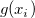
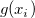
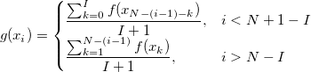
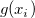

/math-78fc45833f634ccb3f06cc8fcc803503.png "g(x_i)|i=1, 2, ..., N") } denote the Y value of the new dataset, where
} denote the Y value of the new dataset, where /math-8d9c307cb7f3c4a32822a51922d1ceaa.png "N") is the size of the dataset. Each  is computed by the following formula:
is the size of the dataset. Each  is computed by the following formula:
- 
Two filters can be used to perform the decimation, including FIR filter and moving average filter.
FIR filter used in this X-Function is a finite impulse response filter based on regular window. The filter order is specified by the Order variable.
When the Moving Average filter is applied, Origin performs the following steps:
} denote the Y value of the new dataset, where is the size of the dataset. Each  is computed by the following formula: